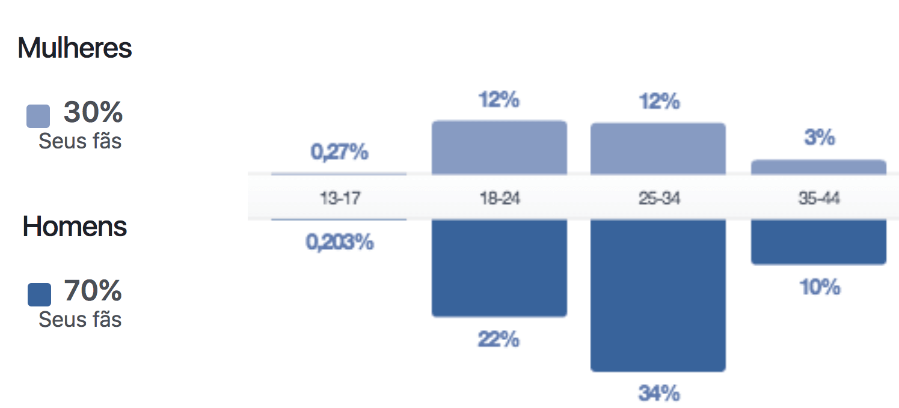

Evento organizado pela comunidade Caju Valley
O Caju Valley não se resume a um local, pessoa, empresa ou organização. Somos uma comunidade plural, formada por e para empreendedores sergipanos movidos pela necessidade de criar soluções que resolvam os problemas das pessoas e empresas.
É um evento de frequência mensal com a missão de criar relacionamento entre empresários inovadores, investidores e grandes empresas atuantes na nossa região.
O objetivo é fazer com que os negócios inovadores se capacitem, recebem investimentos e que as grandes empresas possam comprar soluções inovadoras que de fato as ajudem a resolver problemas.
Apresentam seus negócios, definem os tema do debate com especialista e possuem a oportunidade de interagir em exclusivo com investidor e a empresa âncora presente.
Sua missão é conhecer os negócios inovadores e de forma exclusiva informar o que o levaria a investir no negócio.
Oferta sua mentoria as empresas inovadores em uma mesa aberta sobre o tema a ser debatido durante todo o evento.
Vê a apresentação de todos os negócios inovadores e conversa com todos de forma exclusiva, analisando como esses negócios inovadores são de seu interesse.
Investidor / Especialista
Representante da empresa âncora
6 minutos para cada apresentação.
Sua área de atuação.
Sua trajetória profissional.
O que buscam das empresas inovadoras.
Todos os 10 negócios terão 4 minutos cada para se apresentar.
Qual o problema resolvem?
Qual é a sua solução?
Como eles resolvem o problema?
O que precisam para evoluir?
Formato aberto no estilo Alcoólicos Anônimos.
100 minutos de duração
Tema definido pelos negócios inovadores.
Foco em problemas empresáriais
10 minutos com cada negócio inovador.
Conversa em uma sala separada.
Alguns investidores não serão presenciais e sim via hangout.
10 minutos de duracão para cada negócio.
Conversa em uma sala separada.
Conversa sempre presencial.
Definir o tema da próxima consultoria colaborativa.
Informar qual será a empresa âncora do próximo evento.
Informar qual será o investidor do próximo evento.
Único evento do estado que cria relacionamento entre investidores e negócios inovadores.
10 negócios com CNPJ ou em processo de incubação são avaliados por investidores e empresas âncoras.
Entidades importantes como incubadoras, empresas juniores, institutos de pesquisas e empresas privadas se relacionam com o Dojo.
30 edições (frequência mensal).
43 empresas inovadoras se apresentaram.
12 empresas juniores se apresentaram.
14 empresas sediaram o evento.
16 pitchs realizados.
Média de 40 pessoas por edição.
6 edições (frequência mensal).
Público focado em empreendedores.
6 especialistas ofereceram consultoria colaborativa.
Média de 10 empreendedores por edição.
1 edição.
200 pessoas.
8 pitchs de negócios inovadores locais.
7 palestras.
1500 curtidas
Média de 500 visualizações orgânicas por vídeo.
Média de 600 visualizações orgânicas por post.
Média de 4.000 visualizações por mês.
5 minutos de apresentação comercial durante o evento.
Estande dentro do evento.
Banner da empresa no evento.
Logo no início de cada vídeo produzido no evento.
Logo no site do evento.
Distribuição de flyer e cartões para todo os presentes.
| Frequência | Valor |
|---|---|
| 1 Dojo | R$ 500,00 |
| 2 Dojos | R$ 800,00 |
| 3 Dojos | R$ 1200,00 |
| 4 Dojos | R$ 1500,00 |
2 minutos de apresentação comercial durante o evento.
Banner da empresa no evento.
Logo no final de cada vídeo produzido no evento.
Logo no site do evento.
Distribuição de flyer e cartões para todo os presentes.
| Frequência | Valor |
|---|---|
| 1 Dojo | R$ 300,00 |
| 2 Dojos | R$ 500,00 |
| 3 Dojos | R$ 700,00 |
| 4 Dojos | R$ 900,00 |
Banner da empresa no evento
Logo no site do evento.
Distribuição de flyer e cartões para todo os presentes.
| Frequência | Valor |
|---|---|
| 1 Dojo | R$ 120,00 |
| 2 Dojos | R$ 200,00 |
| 3 Dojos | R$ 290,00 |
| 4 Dojos | R$ 390,00 |
"Ninguém conseguirá trabalhar em equipe se não aprender a ouvir. Ninguém aprenderá a ouvir se não aprender a se colocar no lugar dos outros."
Email cajuvalley@gmail.com
Facebook cajuvalley@gmail.com
Telefone (79) 9893-9449
Site www.cajuvalley.com.br